Hackathon · 26 de noviembre de 2026
Ventana Mágica: una ventana en la tablet para que el niño hospitalizado siga dentro de la vida de su familia, su clase y sus amigos.
Equipo
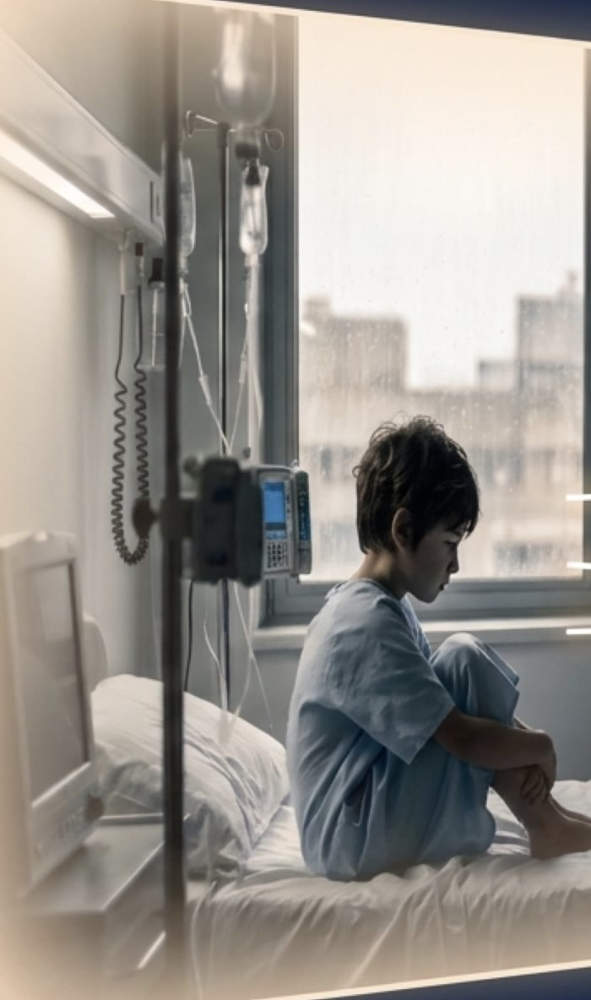
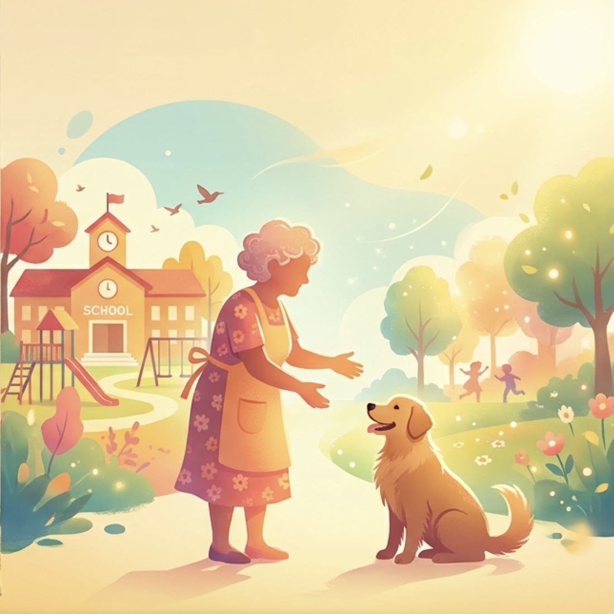
El problema
La medicina cura su cuerpo, pero el aislamiento apaga su infancia.
Su abuela, su perro, su clase… su vida sigue fuera. Sin él.
Un mundo cerca de ti · Ventana Mágica
2
La idea
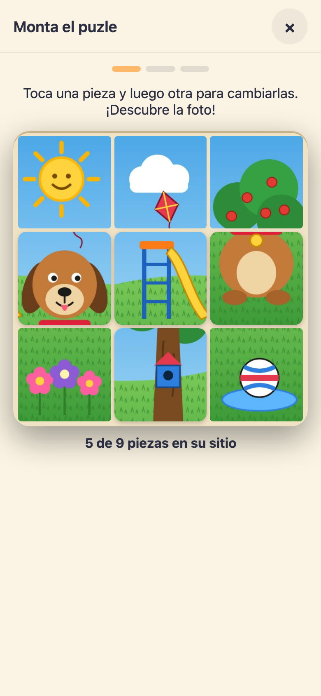
Llega como un puzle fácil, de piezas grandes.
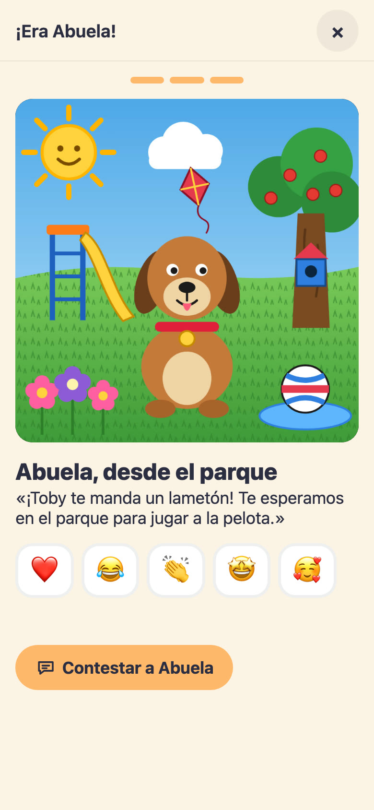
Pistas, acertijo y el mensaje: «¡Era la abuela!».
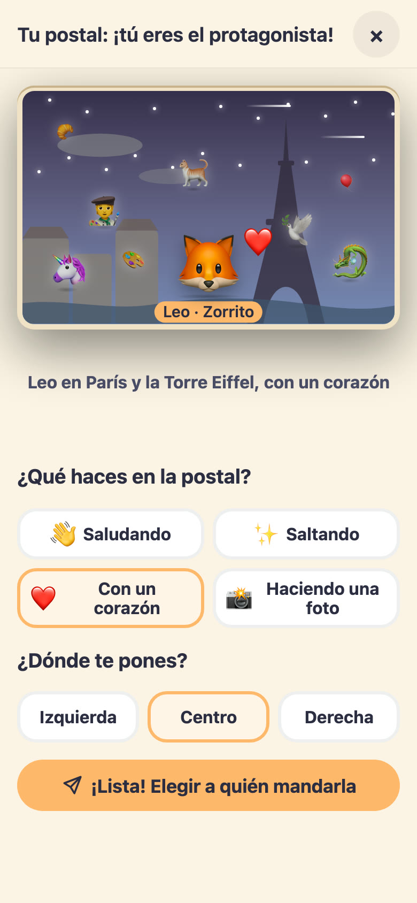
Una postal desde su mundo, con su personaje.
Un mundo cerca de ti · Ventana Mágica
3
Su mundo, su voz
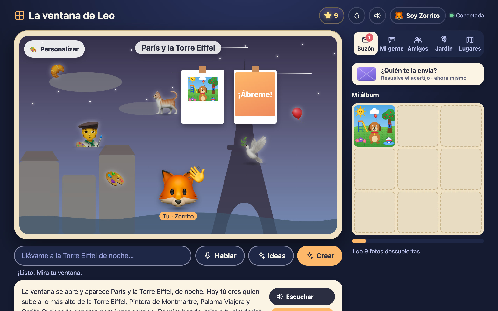
Un mundo cerca de ti · Ventana Mágica
4
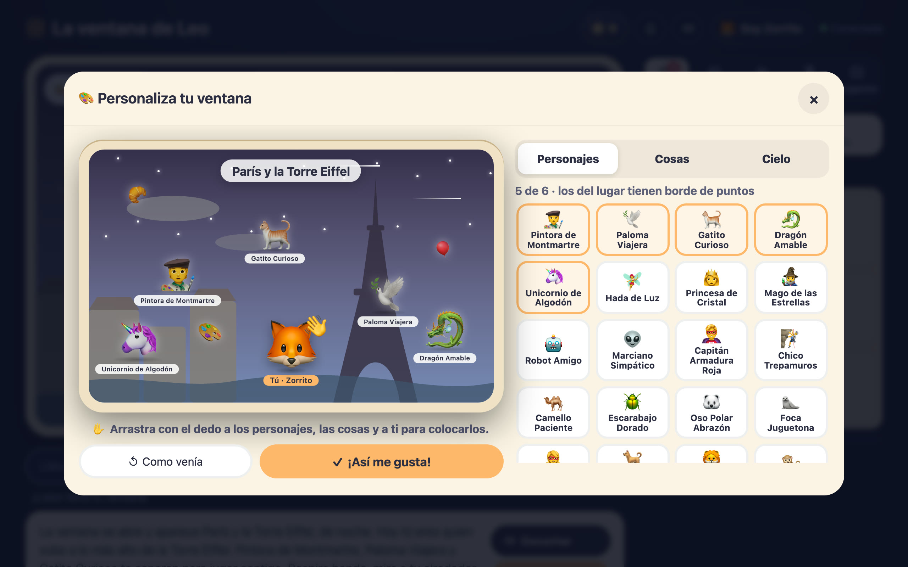
Hecha a su medida
Un mundo cerca de ti · Ventana Mágica
5
Motivación sin estrés
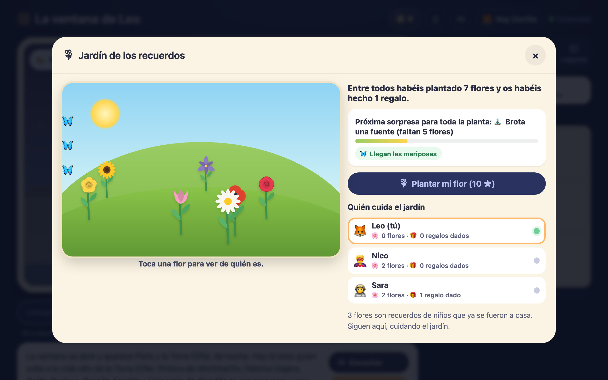
Un mundo cerca de ti · Ventana Mágica
6
Seguridad y privacidad
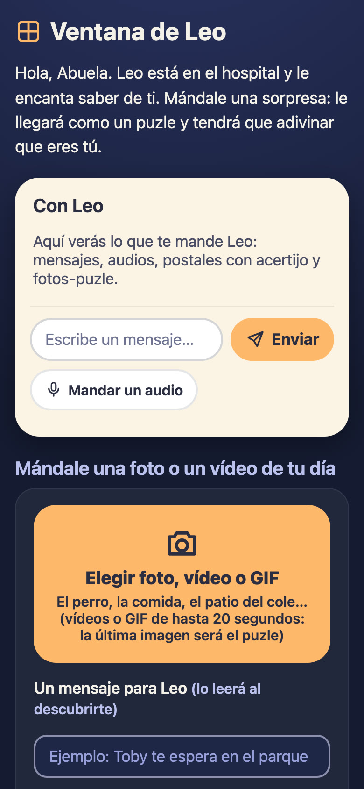
La familia envía
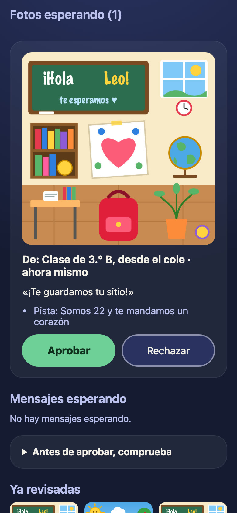
El adulto aprueba
Un mundo cerca de ti · Ventana Mágica
7
Por qué así
Un mundo cerca de ti · Ventana Mágica
8
Cómo funciona
Tablet del niño, móviles de la familia y del adulto. Se instala como una app y funciona aunque se corte la conexión.
→Node.js + SQLite, sin librerías externas. Tiempo real para avisos y aprobaciones. Voz e ideas con IA dentro del propio servidor.
→Un archivo de base de datos y una carpeta de fotos, sin metadatos. Borrado automático. Nada se envía a servicios externos.
Un mundo cerca de ti · Ventana Mágica
9
Demo en vivo · 3 minutos
Una foto de Toby en el parque, con dos pistas.
Le llega el aviso al instante y decide.
Monta el puzle, acierta el acertijo y gana una estrella.
Personaliza su ventana y manda una postal. ¡Sale él!
Datos ficticios. Sin cuentas: cada persona entra con su código o su enlace de invitación.
Un mundo cerca de ti · Ventana Mágica
10
En resumen
El hospital trata la enfermedad; nosotros ayudamos a proteger la infancia.
Llevamos la vida de fuera adentro, de forma ordenada, segura y humana.
Gracias · Equipo
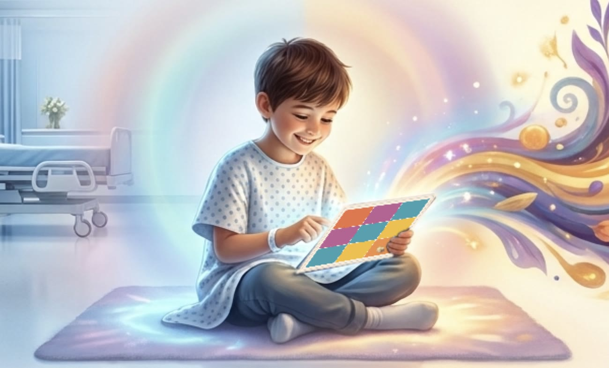